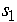
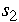

2.
Measurement Process Characterization
2.5.
Uncertainty analysis
2.5.3.
Type A evaluations
2.5.3.1.
Type A evaluations of random components
2.5.3.1.1.
|
Type A evaluations of time-dependent effects
|
|
|
Time-dependent changes are a primary source of random errors
|
One of the most important indicators of random error is time. Effects
not specifically studied, such as environmental changes, exhibit
themselves over time. Three levels of time-dependent errors are
discussed in this section. These can be usefully characterized as:
- Level-1 or short-term
errors (repeatability, imprecision)
- Level-2 or day-to-day
errors (reproducibility)
- Level-3 or long-term
errors (stability - which may not be a concern for all
processes)
|
|
Day-to-day errors can be the dominant source of uncertainty
|
With instrumentation that is exceedingly precise in the short run,
changes over time, often caused by small environmental effects, are
frequently the dominant source of uncertainty in the measurement
process. The uncertainty statement is not 'true' to its purpose if
it describes a situation that cannot be reproduced over time. The
customer for the uncertainty is entitled to know the range of possible
results for the measurement result, independent of the day or time of
year when the measurement was made.
|
|
Two levels may be sufficient
|
Two levels of time-dependent errors are probably sufficient for
describing the majority of measurement processes. Three levels may
be needed for new measurement processes or processes whose
characteristics are not well understood.
|
|
Measurements on test item are used to assess uncertainty only when
no other data are available
|
Repeated measurements on the test item generally do not cover a
sufficient time period to capture day-to-day changes in the measurement
process. The standard deviation of these measurements is quoted as the
estimate of uncertainty only if no other data are available for the
assessment. For J short-term measurements, this standard
deviation has v = J - 1 degrees of freedom.
|
|
A check standard is the best device for capturing all sources of
random error
|
The best approach for capturing information on time-dependent sources
of uncertainties is to intersperse the workload with measurements on a
check standard taken at set
intervals over the life of the process. The standard deviation of the
check standard measurements estimates the overall temporal component of
uncertainty directly -- thereby obviating the estimation of individual
components.
|
|
Nested design for estimating type A uncertainties
Case study: Temporal
uncertainty from a 3-level nested design
|
A less-efficient method for estimating time-dependent sources of
uncertainty is a designed experiment. Measurements can be made
specifically for estimating two or three levels of errors. There are
many ways to do this, but the easiest method is a
nested design where J
short-term measurements are replicated on K days and the entire
operation is then replicated over L runs (months, etc.).
The analysis of these data leads to:
-  =
standard deviation with (J -1) degrees of freedom for
short-term errors
- = standard
deviation with (K -1) degrees of freedom for day-to-day errors
 = standard
deviation with (L -1) degrees of freedom for very long-term
errors = standard
deviation with (L -1) degrees of freedom for very long-term
errors
|
|
Approaches given in this chapter
|
The computation of the uncertainty of the reported value for a test
item is outlined for situations where temporal sources of uncertainty
are estimated from:
- measurements on the test item itself
- measurements on a check standard
- measurements from a 2-level nested
design (gauge study)
- measurements from a 3-level nested
design (gauge study)
|